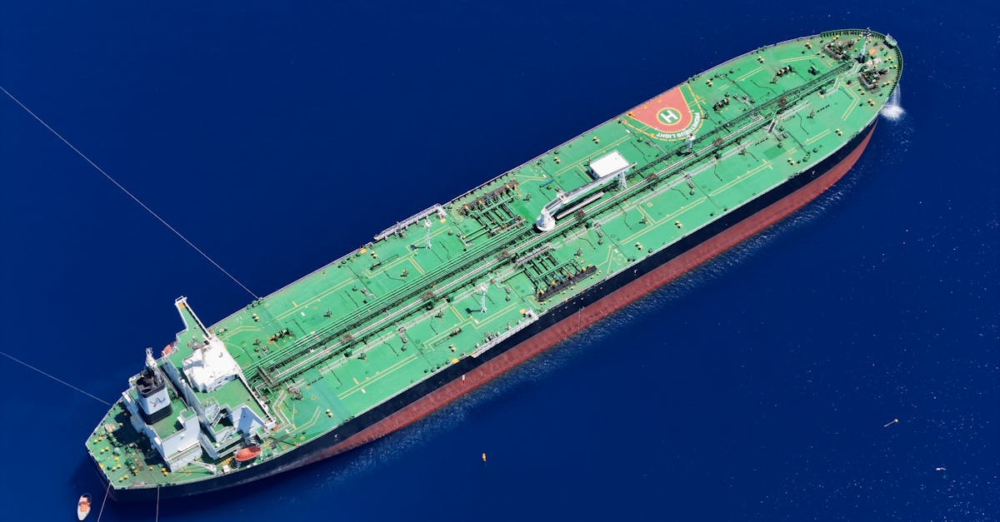

Un ouf de soulagement pour l'économie australienne
La récente annonce du Ministre de l'Énergie australien, Chris Bowen, a dissipé les inquiétudes quant à une potentielle pénurie de carburant dans le pays. Les réserves stratégiques de carburant ont connu une augmentation significative au cours de la semaine écoulée, et de nouvelles expéditions sont déjà en route. Cette nouvelle est particulièrement réconfortante pour une nation fortement dépendante des importations pour ses besoins énergétiques. L'Australie, comme de nombreux pays, navigue dans un contexte géopolitique complexe et des chaînes d'approvisionnement mondiales parfois fragiles. La capacité à sécuriser son approvisionnement en énergie, un pilier fondamental de toute économie moderne, est donc une priorité absolue. Cette gestion proactive des stocks démontre une volonté politique de prévenir les crises et d'assurer la continuité des activités économiques. Pour les investisseurs, la stabilité des prix de l'énergie est un facteur clé qui influence de nombreux secteurs, de la consommation aux transports, en passant par l'industrie manufacturière. Une assurance sur l'approvisionnement permet de réduire l'incertitude et favorise un environnement plus propice aux décisions d'investissement à long terme. C'est un signal positif qui, bien que spécifique au secteur de l'énergie, a des répercussions sur l'ensemble du marché financier.
👉 À lire : Raffinerie Dangote : le nouveau pilier du kérosène européen
Les enjeux de la dépendance énergétique
L'Australie, malgré son statut de pays développé et riche en ressources naturelles, fait face à un défi majeur : sa forte dépendance aux importations de carburant. Cette situation, loin d'être unique, souligne la complexité des marchés énergétiques mondiaux. Les fluctuations des prix du pétrole brut, les tensions géopolitiques dans les régions productrices, ou encore les perturbations logistiques peuvent avoir un impact direct et rapide sur la disponibilité et le coût de l'énergie pour les consommateurs et les entreprises australiennes. Le gouvernement a pris conscience de cette vulnérabilité et met en œuvre des stratégies pour renforcer la sécurité énergétique du pays. Au-delà de la simple constitution de réserves, il s'agit d'une réflexion plus profonde sur la diversification des sources d'approvisionnement et, à terme, sur la transition vers des énergies plus durables. Cependant, cette transition prend du temps et nécessite des investissements massifs. Dans l'intervalle, la gestion des réserves de combustibles fossiles reste une nécessité pragmatique. Pour les épargnants et les investisseurs, comprendre ces dynamiques est essentiel. Les marchés des matières premières, et particulièrement ceux liés à l'énergie, sont intrinsèquement volatils. Une stratégie d'épargne intelligente doit tenir compte de ces facteurs macroéconomiques pour mieux anticiper les risques et saisir les opportunités.
👉 À lire : Chômage US : La baisse des demandes favorise l'épargne IA
L'IA, un allié pour anticiper les crises énergétiques
Dans un monde où l'information circule à une vitesse fulgurante et où les marchés sont interconnectés, l'analyse prédictive devient un outil incontournable. L'intelligence artificielle, en particulier, offre des capacités d'analyse de données sans précédent. Les algorithmes d'IA peuvent traiter d'énormes volumes d'informations provenant de sources multiples : rapports météorologiques, données de trafic maritime, actualités géopolitiques, indicateurs économiques, etc. Ils sont capables d'identifier des schémas subtils et des corrélations que l'œil humain pourrait manquer, permettant ainsi d'anticiper d'éventuelles perturbations dans les chaînes d'approvisionnement, y compris celles du secteur énergétique. Imaginez un Agent IA capable de surveiller en temps réel les mouvements des flottes de pétroliers, les niveaux de production dans les pays exportateurs, et même les indicateurs de demande locale. En croisant ces données avec des analyses historiques et des modèles prédictifs, il pourrait alerter les autorités ou les entreprises bien avant qu'une crise ne se manifeste. C'est précisément ce type d'optimisation que nous visons chez Epargne IA : utiliser la puissance de l'IA pour anticiper les risques et sécuriser les actifs de nos utilisateurs. Une approche proactive qui transforme l'incertitude en avantage stratégique, bien au-delà de la simple gestion de portefeuille.

Comment l'optimisation IA s'applique à votre épargne
Si l'actualité australienne concerne la sécurité énergétique, elle illustre parfaitement un principe fondamental applicable à la finance personnelle : l'importance de la préparation et de l'anticipation. Tout comme un pays doit veiller à ses réserves de carburant, un épargnant avisé doit s'assurer que ses finances sont robustes et adaptées aux aléas économiques. C'est là qu'intervient l'investissement automatisé par IA. Notre Agent IA, par exemple, ne se contente pas de suivre les marchés ; il apprend, il s'adapte et il optimise en continu votre stratégie d'épargne et de placement. Il analyse votre profil de risque, vos objectifs financiers, et les conditions de marché pour prendre les décisions les plus judicieuses, 24h/24 et 7j/7. Pensez-y comme à un système d'alerte avancé pour votre patrimoine. Il peut identifier des opportunités d'investissement que vous auriez manquées, ou vous avertir d'un risque potentiel avant qu'il ne se matérialise.
- Diversification automatique de portefeuille
- Rééquilibrage basé sur les conditions de marché
- Identification proactive des opportunités
- Gestion des risques optimisée
Sécurité des approvisionnements et stabilité des marchés financiers
L'énergie est le sang de l'économie mondiale. Quand le flux est menacé, tout ralentit. La vraie intelligence réside dans la capacité à anticiper et à sécuriser ce flux, qu'il s'agisse de barils de pétrole ou de flux financiers.
La relation entre la sécurité énergétique et la stabilité des marchés financiers est indéniable. Une crise énergétique peut rapidement se traduire par une hausse de l'inflation, une baisse de la consommation, une contraction de l'activité économique et, par conséquent, une forte volatilité sur les marchés boursiers et obligataires. Les investisseurs, craignant pour leurs actifs, peuvent adopter une attitude plus prudente, voire vendre massivement, entraînant des corrections parfois sévères. À l'inverse, une situation énergétique maîtrisée, comme celle que l'Australie semble vouloir consolider, contribue à un environnement économique plus stable. Cette stabilité est le terreau fertile pour des stratégies d'investissement à long terme. Elle permet aux entreprises de planifier leurs investissements, aux banques centrales de mener leurs politiques monétaires avec plus de prévisibilité, et aux épargnants de faire fructifier leur capital avec une confiance accrue. L'optimisation par l'IA prend tout son sens dans ce contexte. En analysant des milliers de données interconnectées – des prix du pétrole aux indices boursiers, en passant par les indicateurs de confiance des consommateurs –, un Agent IA peut modéliser les interdépendances complexes entre différents secteurs et marchés. Il peut ainsi aider à construire des portefeuilles plus résilients, capables de mieux naviguer dans les périodes d'incertitude, qu'elles soient liées à l'énergie, à la géopolitique ou à d'autres facteurs macroéconomiques.

Conclusion
L'Australie, en renforçant ses réserves de carburant, envoie un message fort de résilience et de gestion proactive des risques. Cette actualité, bien que centrée sur le secteur de l'énergie, résonne profondément avec les principes de l'épargne intelligente et de l'investissement automatisé. La sécurité de l'approvisionnement, qu'il s'agisse de ressources physiques ou de capital financier, est primordiale pour la stabilité et la prospérité. Dans un monde de plus en plus complexe et interconnecté, l'anticipation et l'optimisation sont les clés du succès. L'intelligence artificielle offre des outils puissants pour naviguer cette complexité, en analysant les données, en identifiant les risques et en saisissant les opportunités. Chez Epargne IA, nous croyons fermement que l'avenir de l'épargne réside dans des solutions intelligentes et automatisées, capables d'offrir sérénité et performance à nos utilisateurs. L'histoire australienne nous rappelle que la préparation est la meilleure défense contre l'incertitude. Et votre épargne mérite la même attention stratégique.